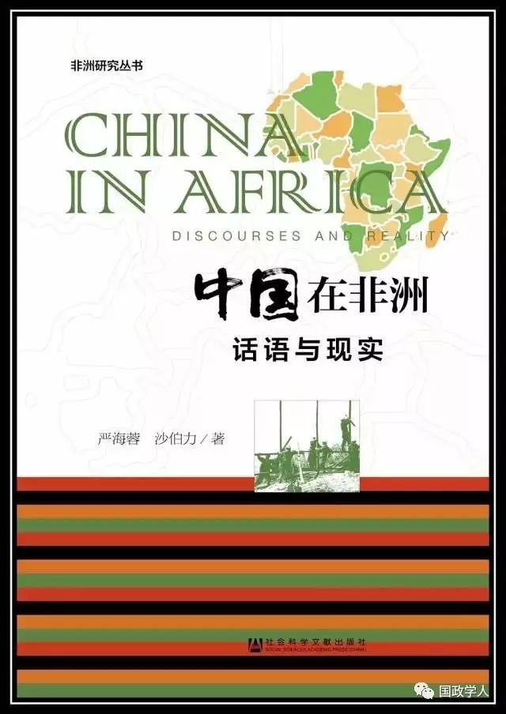

收录于合集
以下文章来源于城邦的世界 ，作者严海蓉 沙伯力
城邦的世界 .
国际问题研究领域（国际关系、外交学、区域国别）新书、好书推介及资讯共享平台。

原文章题为“中国人性侵案：在非洲‘民主典范’国家——赞比亚的种族化视角”，摘自《中国在非洲：话语与现实》。
美国小说之父和种族主义批判者马克·吐温在1870年的一篇文章中，讲述了一个真实的故事，即一个主日学校的旧金山白人小男孩因为“向中国人扔石头”而被捕。

马克·吐温列举了很多加州的中国移民被迫害的方式。比如， 中国矿工需要缴矿税，而白人是豁免的。此外，如果是白人在矿地偷窃会被释放，而如果是中国人偷窃则要被处以吊刑。 “无论什么时候，多么离奇的犯罪行为发生，白人都可以径直走开而华人则要接受处罚。”吐温以当地记者的身份报道了这个事件，他指出，这个男孩可能是从政治家和媒体学到：
华人没有那些任何人都应该尊重的人权；他们也没有那些任何人都应该怜悯的痛楚；当白人需要替罪羔羊的时候，华人的生命或者自由就变得一文不值……因此，这就是再自然不过的了，这个走在去主日学校路上的阳光男孩自言自语道：“啊，有中国人！如果我不向他丢石头的话，上帝都不会爱我了！”
吐温讽刺了精英在将美国的反华种族主义自然化中的作用，然而不论当时还是现在，美国都不是唯一发生这种事情的国家。在非洲南部的赞比亚，类似的事情也在发生。赞比亚是一个民主选举国家，它的主导产业是铜矿业，该行业大多被外国公司所控制。
由于 2005年前后开始了受政治因素引起的反华煽动活动 ，赞比亚政府和部分公民对华人移民平等法律保护权的否认现在成为惯例。这一点可以从2011年9月赞比亚爱国阵线政府掌权后所采取的行动中看得出来。
2005年前后，赞比亚潜伏着的机会主义分子开始进行反华政治煽动活动，声称中国人在非洲和全世界都是一种恶意的存在。这些因素使 赞比亚成了西方主要是美国和英国，与中国在非洲进行战略竞争的前沿阵线国家 。
这可以在西方国家领导人质疑中国在非洲的所作所为中得以印证。
举例来说，2011年， 美国国务卿希拉里·克林顿 在访问赞比亚时，提醒非洲人来对抗中国的“新殖民主义”。
2012年在塞内加尔，她也发起了对中国的“隐秘攻击”，断言说 “美国致力于一种增加价值的可持续的伙伴关系模式，而不是从非洲攫取利益” 。
与其他国家不同，“美国将会捍卫民主和普遍的人权，即使当反其道更容易，美国仍然会在获取资源时如此去做”。
相似的是， 英国首相戴维·卡梅隆 在尼日利亚争辩到，中国的“独裁式资本主义”实际上征服了非洲人，也阻碍了西方进行援助和民主价值宣传。
一个在德国公司工作的中国分析师指出：“中国公司在非洲做的任何事情都被看作代表中国整体， 中国移民在非洲做的任何事情也都会被看作代表所有中国人 。”
这是因为， 政客和媒体在非洲传播关于中国和中国人的刻板的负面形象 ，在赞比亚更是如此，因为爱国阵线在地方政治中存在机会主义，而且西方精英将赞比亚看作与中国进行对抗的首要国家。
基于过多的错误经验、错误认知及对中国人的刻板印象， 赞比亚对中国公司和个人的行为进行严格审查和区别对待，并因此而侵害中国人的平等保护权 。
▽
爱国阵线的种族主义活动
爱国阵线在2011年9月掌权之后，表现出一种要和中国改善关系，把中国当作重要投资和贸易伙伴的意愿。
在2011年10月的一次关于中国投资商的午餐会上，萨塔说，“我们竞选时，人们都在抱怨中国人，我曾许诺要把中国人清除出去。现在中国人也要把我清除出去了，所以 我们要利用中国人来获取发展 ”。
2012年2月，萨塔开玩笑说，“前总统鲁皮亚·班达（也是多党民主运动首领）时期的中国人和迈克尔·萨塔总统时期的中国人不一样”。法克逊·沙门达，当时的劳工和青体部部长（现任信息、广播和劳工部部长）公开表达说：
赞比亚的中国人不应该被误导认为赞比亚政府憎恨他们，不珍惜他们的投资。他们不应该听信关于政府在中国投资问题上持消极立场的谣言。赞比亚人民喜爱中国人，这就是为什么赞比亚人经常谈论中国人的原因。
然而， 掌权的爱国阵线继续进行着种族宣传 ，政府高官还是把中国人作为谴责的对象，继续侵犯他们的平等保护权。盖伊·斯科特继续把白人放在种族等级体系的最上层，还说在赞比亚，“人们是怀旧的，但这种怀旧不是怀念剥削与分化政策，而是怀念殖民时期的标准”。
自从2011年爱国阵线掌权后，中国人不但在性侵案中备受批评，而且在以下事件中也受到指责：
作为劳工部部长，坎布维利威胁要 驱逐一个中国医生 ，因为这个医生对他“无理”；
爱国阵线的两任矿业部部长，法克逊·沙门达和威尔伯·西谬萨 对中国矿业公司的劳动规范进行了谴责 ；
劳工部副部长雷福德·穆布卢 批评中国有色矿业集团有限公司控股的谦比希铜矿冶金厂 ，因为该厂的一个赞比亚保安开枪打死了一个盗贼，尽管其他公司的保安也对小偷使用过枪支；
商务部部长鲍勃·斯顷加在没有任何证据的情况下，就 指控多党民主运动政府在中国印刷了成百上千亿的赞比亚克瓦查 ，以便在2011年大选时分发。
这些事件都表明爱国阵线成为执政党后，它的反华活动在继续。 爱国阵线再次向它的支持者表示，他们会继续“赶走中国人”，加强同美国和英国政府的联系 。
中国驻赞比亚大使在回应坎布维利和中国医生发生冲突这个事件时指出，“非洲只有一个政党使中国成为一个政治性问题，那就是爱国阵线”。 反华是爱国阵线的一个政治“抓手” 。
▽
种族主义和大国在非洲的战略竞争
19世纪晚期和20世纪初期 ，“中国人常常被澳大利亚种族主义分子诽谤”。中国男人被指控为“粗野的和不道德的人，经常违反商业和工作惯例”，然后将中国人同性侵事件相提并论。
在20世纪初期的南非 ，通常都会认为没有中国女性的话，中国矿工会强奸非洲女性或者白人女性。德兰士瓦的矿厂议院对此进行了调查，没有发现这方面的证据。
这种中国移民具有性侵威胁的观点已经在西方渐渐消失了，但是在非洲依然很有市场。
在非洲，对外国人的刻板成见常常追溯到殖民时代， 对中国人的消极刻画也是很普遍的，这部分是因为非洲媒体对西方媒体的依赖 。
反华的英国媒体宣传说，这么多的中国人“涌入”非洲， 10年之内，到非洲生活的中国人将会比那里的欧洲人都多 。
萨塔多次提到“中国威胁论” ，还说中国人“太多了”，超出了中国资源的供养能力。因此，这些多出来的中国人被“丢到”赞比亚来。
西方和爱国阵线对中国移民进行消极评价的主题之一就是中国男性寻求与赞比亚女性发生性关系，这是因为大多数到赞比亚的中国移民是男性。
对经济和强奸的断言常常与对外国移民的贬低有关 。
赞比亚因为资源丰富，与8个国家接壤，在南部非洲处于重要的战略性位置而被重视。
与其人口不成比例的是，2005年前后爱国阵线进行反华煽动活动后，西方国家就开始关注赞比亚。这部分是因为， 西方政客、媒体和分析家逐渐地开始关注与中国进行战略竞争 ，包括在非洲的战略竞争。
这种竞争并不是关于具体的物质利益的竞争，而是一种“西方对中国在非洲的角色进行批判的话语权问题” ，以及对中西关系中其他的“争议”问题进行批判的主导权竞争。
这种竞争在很大程度是单方面产生的，它是基于西方对“中国人在非洲”及中国的影响力将超过西方的影响力的指控之上的。 **** **** ****
关于西方与中国之间的现实竞争有着很多的争论，或者说至少美国的政策制定者倾向于这样想。
普林斯顿·莱曼是美国的一名有经验的外交官，一直驻扎在非洲，现在是美国驻苏丹特别大使。他写道，“把中国看作一个在非洲争夺经济和政治影响力的可怕的竞争者，而不仅仅是看成一个良性的参与者，这样才更明智一些”。
智囊团的分析师们也主张进行战略竞争。
美国国会更是如此。
分析人员还将其与美国的军事相联系。“西方媒体评论员在描述中西之间争夺非洲自然资源的冲突问题上更是不遗余力”。一些分析人员指出，因为美国和中国在非洲做的事情并不重叠，或者说 中国和美国在非洲的大部分利益是兼容的 ，比如石油行业，没有很客观的理由来进行竞争。这些分析人员一般不是来自美国或者英国的政治或媒体精英。
西方国家曾经批评赞比亚与中国“走得太 近”，然后在赞比亚疏远中国之后对这个国家大加赞赏。 冷战时期，“美国倾向于支持白人政权和白人少数人群的利益，与赞比亚支持独立和多数统治的立场形成了鲜明的对比”。
20世纪60年代，西方国家拒绝了赞比亚修建一条穿过南非的铁路以运输铜矿的要求。 美国当时警告赞比亚总统肯尼斯·卡翁达，“反对他与中国打交道” ，并且反对赞比亚在70年代与中国共同建设铁路。
近来，赞比亚出现了一种观点，即 美国支持爱国阵线政府 ，尽管爱国阵线政府继续和穆加贝的津巴布韦民族联盟—爱国阵线保持友好关系。这与爱国阵线敌视“中国人”的历史相关。
美国驻赞比亚大使馆一直密切关注着“中赞关系”和当地对“中国人”的批评。 爱国阵线执掌政权后，西方及其他的捐助国大幅度增加了对赞比亚的援助 。美国作为赞比亚最大的援助国，将2012年捐赠的40亿美元（用于艾滋病和疟疾病的防治）增加到2013年的50亿美元，还有与美国千年挑战公司35.5亿美元的账户，这是一家通过要求受援国“保证经济自由”来强化新自由主义的机构。
然而，一些赞比亚人对美国提供的这种有附加条件的援助持批评态度。2012年，针对美国要花1200万美元在赞比亚设立一个农业机构的计划，一个博主评论道：
美国人只是为一些“软工程”提供资金，诸如研究机构、ARV抗逆转病毒药物、非政府组织等等。这些资金中的绝大部分都归了美国专家，而不是赞比亚人。他们并不资助赞比亚急需的基础设施建设。只有中国人在资助赞比亚的基础设施建设（包括两个体育场、卡富埃峡水电站、卡里巴水库北岸的修缮、芒古卡拉博公路等）。不幸的是，爱国阵线政府这么反华，这些资助很快就会枯竭。
为了反对这样的观点， 美国继续贬低中国在赞比亚的作用 。尽管“只有几家美国公司在赞比亚有着比较重要的影响”，而“中国在赞比亚的投资是美国的很多倍”。半岛电台网站在2011年底对此进行了报道，美国驻赞比亚大使对研究人员说：
中国应该向美国学习，“做点贡献”。他重复了美国国务卿希拉里·克林顿在2011年6月访问赞比亚时所说的话：“即使你做得不错，你也应该行善，做好事。”一些赞比亚人告诉我们他们觉得中国总是以恩人自居。 __
希拉里将美国在赞比亚的活动与中国的进行了对比， 说“美国是在为赞比亚人民投资，而不仅仅是为精英投资，我们的投资是从长远角度考虑的” 。可是，中国在赞比亚的300家公司雇用了成千上万的当地人，而美国的几家公司所雇用的当地人就少太多了。
▽
** 非洲的反华煽动活动对中国的影响**
中国人被描述成殴打、杀害、威胁、强奸赞比亚人的形象。尽管在赞比亚的矿厂和矿业城镇中，很多国家的人，包括赞比亚人都参与到这些活动中去了，且至少与那些被推脱给“中国人”的行为一样有害，但 西方媒体反复强调和宣传中国的罪恶，完全不考虑当时当地的背景 。
它们还将其推广到所有的非洲国家，以便 在更大范围内将中国人妖魔化 。西方自由主义政客、媒体和非政府组织对“中国在非洲”的不恰当的道德说教形成了战略竞争中片面的话语权，这允许西方人自认为也叫别人认为，与中国人相比，他们在非洲的表现相当好。
他们描述的这种战略竞争是片面的，因为在非洲的“中国人”的行为作风并不一致。虽然西方和很多非洲地区盛行这么一种观念，即 认为“中国人团结一致，在非洲搞垄断” ，但事实上，甚至非洲大陆上都不存在一个强有力的“中国”，因 为中国政府各部门不相协调，各自制定自己的对非政策，而且中国公司在非洲市场上相互竞争 。
性侵案也印证了 中国人在非洲并不团结的事实 。中国驻卢萨卡的大使馆没有公开谈及这个事情，几乎没有发挥什么作用。如果被告人是中国商人的话，大使可能就会出面了。
2012年的一份调查显示，50%的美国政策制定者认为“东亚/中国”对美国具有最重大的战略意义，85%的人认为“东亚/中国”在20年的时间里都会如此重要。
出于对中国影响力进一步扩大的担忧， 西方与中国在非洲展开竞争的观念将会增强 。不管美国2011年宣布的“重返亚洲”战略是否会扩展，美国都将在全球范围内对中国开展的活动进行遏制。
与西方亲近的非洲政治精英也会努力使中国在非洲的存在边缘化 ，目的是与对中国友好的政敌对抗，以确保西方援助的流入，并证明他们所认同的新自由主义意识形态的正确性。
像性侵案这种带有很强政治色彩的事件，其中非洲的中国人被挑选出来区别对待，这样的情况就可想而知了。这些事件会影响到那些被卷入其中的人，也会 影响中国在非洲存在的正当性 。
但是，这种 否认平等保护权的做法也许会受到挑战 ，因为国外的中国人开始要求中国政府捍卫他们的权利，学者们也开始分析像赞比亚这样的“民主典范”国家进行反华种族歧视活动的目的和方法。
本文来源： 城邦的世界（cb1648）
筛选、 编辑： 里仝
您可能还会喜欢：